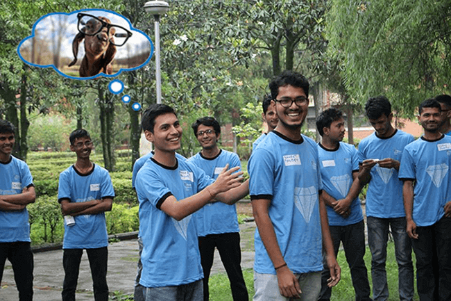

Microsoft Innovation Center Nepal had organized MSP Orientation Program at Nepal Administrative Staff College, Jawalakhel (TechMela Day 2).

Behind the Scene
It was rainy day, and I was rushing towards the Staff college’s Main Hall. Soon, I checked-in to confirm my attendance and MICNepal’s staff handed over a Tote bag (with a t-shirt, pen, and notebook).
Ms. Suchitra Maharjan was the first person I interacted and she asked me to follow her. It was Bhrikuti hall where the orientation program was running.
No sooner, I entered the hall, I saw lots of new people with blue t-shirt with tag “We make Computers Work for you”.
It’s great. I was ready to explore the full-day orientation program with our Mentor Mr. Allen Bailochan Tuladhar, Country Director of Microsoft.

Introduction with New Friends
To be comfortable with new students, we were given tasks to choose a random partner. We have had short introduction. Then, we draw the animal avatar(picture) of our partner (which matched him), paste it on back of him/her. Then we presented the short introduction of our partner. Also, mentioned the reason why we chose particular avatar for our partner.

MICNepal’s Welcome Session Starts
Once again, Mr. Allen Bailochan Tuladhar welcomed us. He gave an introductory presentation with an overview of MSPs Program.
Student Passion: The ideal theme of this program is about student’s passion. When Technology becomes Absolute Passion, then students can take themselves to next level (Converting Caterpillars into Butterflies) cooperating with Microsoft Student Partners Nepal.
Missions/ Goals: To inspire, nurture & grow students into Technology leaders of future.
- Inspire MSPs to learn use and evangelize the technologies now and through the careers.
- Give MSP a compelling and relevant certificate offer that will help students to gain skills.
- Relationship with MSP via Mentorship program
- Be seen as an asset and badge of honor on MSPs resume.
Mr. Allen also told us about the bitter truth once we get selected as MSP. He tried to show us an example by drawing two applicants Namrata and Anshu (same college ). Allen sir told them only one will be chosen and decide themselves who will be the one. As an answer, both pointed at each other and revealed us to be the best friend.

Who is the Next MSP (Microsoft Student Partner) ?
We also had a discussion about MSP selections, “What qualifies us to be an MSP”. We need to answer what qualities do we need to be a Microsoft Student Partner.

TGG Challenge : Group Division for Presentation
As a part of TGG ( The Generation Green) Challenge, participants divide into several groups. Each group needs to give a presentation in different 5 categories: Climate, Water, Forest, Wildlife, and Food. Then, we had to discuss the problems under our topic and present our idea to solve those problems.
Photo Shoot Session
Before heading for the launch we shoot our photos (individual).

Break Free Launch Time
For all the groups, there was only 45 minutes time left. Then. we had the launch along with our own group members. Giving an example of my group Dipesh Bhandari, Regan Maharjan, Shirisha Maharjan, Tulashi Luniya and Binod Jung Bogati (that’s me) sat together for launch, yet scratching ideas. We discussed our topic Climate and came up with an idea about vehicle notifier.
Video Shoot Session
We’re on a short video clip under the tagline “We make Computers work for you”.

Presentation Time
It was the presentation time after the launch was over. We sketched some ideas.
Global Warming is the leading cause of Climate change. And we all know its consequences so we need a mechanism to control it.

So our main ideas were to build a notifier for vehicles which alerts the people if their vehicles is producing more carbon products.
This notifier changes the technology, changes the climate, change the technology and changes the smiles of the world.
Finally, we presented the ideas splitting the contents to each member. Other groups presented with lesion giving drama.
Jokes, Stories and Fun
During the session, we listened up and downs of international personalities (Steve Jobs, Bill Gates, Satya Nadella), and different technology leads (Microsoft, Google, Oracle).
Allen sir also shared his past memories about, how he got chance to visit Bill Gates home and knew the truth of Bill Gates life. As a part of the humor, Allen sir also cracked joke of, Bill Gates in a Restaurant.
Once, Bill Gates went to a restaurant. After having food, he only tipped $100 to the waiter.
Waiter: Your daughter always give me $1K as a tip. But you the world richest person, only gave $100 ?
Bill Gates: She is the daughter of the world’s richest person but I’m the son of a lawyer.
During this session, we got a chance to learn how young startups emerged out to revolutionize the world with no big investments.
Video Presentation
Mr. Allen Bailochan Tuladhar also gave a session on various contests that MSP performed, motivational videos, and uses of cloud (Microsoft Azure) in short. We went through different videos like Give me some sunshine, and others. We also got a chance to listen to this song.
Interactive Session
Then we had an opportunity to interact with Allen sir, we asked him different questions. We all knew, only the best of the best will be selected as MSP. We also asked about the opportunities for the student what if they are not selected. Allen sir told us the story about the student who tried for 4 times and but still didn’t got selected because each year even better applicants appeared in front of him. Not only, this another student who participated in MSP orientation and got selected, and never came back to MICNepal after getting the title.

With this we came to know, it’s not all about winning just the title of MSP rather it means a lot “When one spent good time helping, sharing experiences, cooperating with others during and after being an MSP.
End of the Session
Before the end of the session, we’re given home assignments and I was glad to accomplish all the tasks :
Share an idea on Nepalideas.com
Afterall, the main objectives of the MSP orientation program were to provide the overview of the MSP program. Also, the perks and contributions of MSPs of Nepal/Abroad. Well, the best students from the best colleges will be selected for Microsoft Student Partners 2017. This is done via evaluating their overall individual/ team performance during the interactive sessions running throughout the day.
I’m very glad to be with Allen Sir and his team for 7 hours + in a place where the session was scheduled and organized in such a way that we had no any discomfort throughout the session and these memories will be always in my heart. I’d really like to thank the whole MICNepal team for the organized great program for we students.